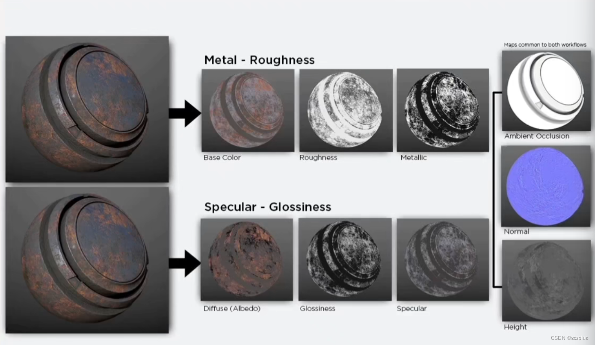

# 美术贴图资源 PBR 流程
# 两种工作流程

Metal / Roughness 容易调参，应用广泛，但是无法调节菲涅尔反射值。
Specular/Glossiness 的话，可以修改菲涅尔值，但是容易破坏能量守恒。
# 金属 / 粗糙度工作流（Metal / Roughness）
# base color RGB 贴图 - sRGB
我们通过折射率算出的折射光线是被吸收的光线。对于金属来说部分光线反射，折射光线直接被吸收。金属的颜色来自于折射的光线也就是 F0, 也就是说金属的 F0 就是金属的颜色。
虽然金属度为 1 通常是剖光金属，通常金属可以在 235-255 sRGB 之间，这个区间的材质反射率需要满足： 70-100%（Base ColorMap 180-255 sRGB）。
混合材质（即非导体和金属导体混合材质）则可以认为同时储存了两种数据；
数据范围
原则上说，base color 中不会存储光照信息，所以对储存的数据有范围的约束。
非导体： 暗色值，尽量不要低于 30-50sRGB，严格控制下应该不低于 50sRGB。对于亮色值，贴图中不应该高于 240sRGB。
导体：金属一般会有 70-100% 的镜面反射，映射到 sRGB 大概为 180-255，

# 例外：
过于微小，不适合储存在 AO 中的光影信息，可以存在 micro-occlusion，可以叠加在 basecolor 中增加细节。但是这部分数据与 ao 数据中的光影信息不同，不仅影响漫反射，还影响高光反射部分。
# Metallic 贴图 灰度贴图 - Linear
通常用于区分金属与非金属。通常当做 Mask 使用，非金属的 F0 通常不是手动创建的，如果一个位置的金属度是 0，会把这个位置的 F0 当做 0.04 处理。
储存数据
对应区域的金属度。作用类似于涂层的遮罩，告诉着色器应该如何去解读 Base Color 贴图中的 RGB 数据。0.0 纯黑代表非金属，1.0 纯白代表纯金属。
例如使用不同的金属度来表现金属锈蚀的程度。

metallic 贴图要点
- 腐蚀、氧化、污渍的金属不是金属，黑色的金属度，和灰色的非金属程度。
- 金属度应该被当做一个 Mask，用来告诉 Shader 如何解释 Albedo 贴图中的颜色信息。（金属：反射率，非金属：反射颜色）
- 金属度不能总是 0-1，在 0-1 之间应该有很窄的过渡灰。
- 金属度为 0.85-1（ 235-255 sRGB ）的区域需要有高于 70-100%（180-255 sRGB 或者 186-255）的反射率。
- 如果金属度低于 235 sRGB 那么需要降低对应 BaseColor 当中的颜色。降低程度可以根据氧化层、污渍层、腐蚀层的程度来决定。
# Roughness 贴图 灰度贴图 - Linear
储存数据
对应区域的光滑程度，不规则度。纯黑（0,0）代表平滑表面，纯白（1,0）代表了粗糙表面。
# F0 反射率
F0=Fresnel Reflectance at 0 Degrees
- 电介质 (dielectrics) : 0.02-0.05 如果不确定可以设置成 0.04
- 导体 (conductors) : 0.5-1.0
表面的反射率由折射率决定
非金属（电介质 / 绝缘体）应该是灰色值，金属（导体）应该是 RGB 值。对于光滑的表面电介质 F0 应该在 2% 和 5% of 之间，斜略角 100% 他的 F0 变化不大。金属变化比较明显。通常 F0 和导体和绝缘体相关，宝石是例外。
在 ue 里 F0 就是 Specular 贴图，默认是 0.5, 其中在 F_Schlick 公式的 SpecularColor，是
1 | |
# 镜面反射 / 光泽度工作流（Specular/Glossiness）
# Diffuse RGB 贴图 - sRGB
Diffuse 贴图中的颜色表示的是漫反射颜色，原始金属由于没有漫反射，颜色应该为纯黑（0.0）。
Diffuse 贴图除了微观遮蔽（Micro-occlusion）外不应该带有其他光照信息。
除了表示金属的纯黑（0,0）外，暗色值最多不应该低于 30sRGB，严格 50sRGB。
亮色值不应该高于 240sRGB。
# Specular RGB 贴图 - sRGB
储存数据：F0（0 度菲涅尔反射值）
F0 值都是基于真是世界测量的，没有需要时，尽量不要使用反常规的数值。严谨一点应当查表。不要忘记线性空间和 sRGB 的转化
# Glossiness 灰度贴图 - Linear
光泽度贴图用于描述表面不平整度的贴图，表面不平整会造成光的散射。
这个贴图中，纯黑（0.0）代表的是粗糙，纯白（1.0）代表平滑表面。这和 M/R 工作流中的粗糙度贴图时完全相反的，但是在设计侧却有着类似的制图原则。
# 总结
| Metallic/Roughness 流程 | Specular/Glossiness 流程 | |
|---|---|---|
| 优点 | ||
| 缺点 |
BaseColor/Diffuse/Specular 一般用 sRGB 空间来输入输出 就是 gamma 空间
Metallic/Roughness/Glossiness 一般用线性空间输出